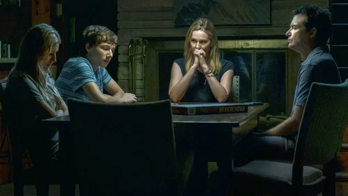
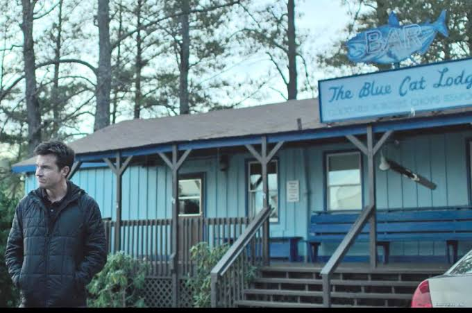

Ir al contenido
OZARK
Lake of the Ozarks
Inicio
Temporadas
Temporada 1
Temporada 2
Temporada 3
Temporada 4
Personajes
Galería
Contacto
Galería
Imágenes de escenas de la serie.

La familia Byrde

El bar Blue Cat, primera pantalla de los Byrde
La casa sobre el agua
El parque de casas rodantes de los Langmore
El casino flotante Missouri Belle
Wendy y el escondite del dinero en la funeraria